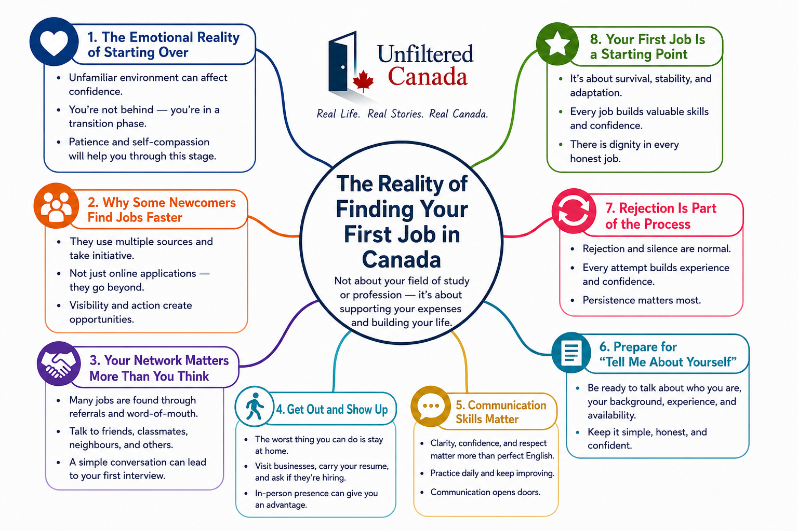

Finding your first job in Canada can either feel surprisingly easy or incredibly difficult depending on how you approach it.
This article is about finding your first job in Canada to support your expenses — not necessarily a job in your professional field or long-term career.
Some newcomers arrive with work already lined up, while others spend months searching without success. If you are an international student or immigrant wondering why this difference exists, you are not alone.
The reality is that finding your first job in Canada is not only about qualifications or luck. It often comes down to mindset, consistency, networking, communication skills, and the willingness to step outside your comfort zone.

The Emotional Reality of Starting Over
Moving to a new country can quietly affect your confidence. Everything feels unfamiliar — the culture, the system, the weather, the language, and even the way people apply for jobs.
Meanwhile, you may see others already working, socializing, and settling into routines while you are still trying to figure things out.
Once classes begin, once you start meeting people, and once you land your first role, life begins moving quickly. The difficult beginning eventually becomes part of your growth story.
Why Some Newcomers Find Jobs Faster Than Others
People who find jobs quickly usually use multiple sources and opportunities.
Some connect with friends or relatives already living in Canada. Others approach employment agencies, attend hiring events, or physically visit businesses asking if they are hiring.
Many newcomers rely only on online applications from home. While online applications matter, they are also highly competitive. Hundreds of applicants may apply for the same role within hours.
What often separates successful job seekers from struggling ones is visibility and initiative.
Your Network Matters More Than You Think
Building a strong network can dramatically improve your chances of finding your first job in Canada.
Talk to classmates, roommates, neighbours, coworkers, friends, and even people you casually meet. Many jobs are never publicly advertised and are filled through referrals or word-of-mouth recommendations.
A simple conversation can sometimes lead to your first interview.
The Worst Thing You Can Do
The worst thing you can do while searching for your first job in Canada is stay at home.
Submitting applications online all day limits your exposure and slowly affects your confidence when responses are delayed or non-existent.
Going outside changes the experience completely.
Visit malls, grocery stores, coffee shops, restaurants, warehouses, plazas, and local businesses. Carry copies of your resume and ask politely if they are hiring.
Many businesses will still tell you to apply online, which is normal. But occasionally someone will speak with you directly and notice your confidence, communication skills, or attitude.
In-Person Applications Still Work
In sectors like retail, warehouses, restaurants, customer service, and small businesses, in-person applications can still be highly effective.
- Dress neatly and professionally
- Carry multiple copies of your resume
- Maintain eye contact and confidence
- Speak clearly and respectfully
- Ask if the manager or supervisor is available
If the manager is unavailable, ask when they will return and follow up later. Hiring decisions are often made directly by supervisors or managers, not front-desk staff members.
Prepare for “Tell Me About Yourself”
One of the most common interview questions in Canada is:
Even for entry-level jobs, employers want to understand your personality, communication style, and attitude.
- Who you are
- Your educational or professional background
- Any previous experience
- Why you want the job
- Your availability and willingness to learn
You do not need perfect English or a corporate-style answer. Authenticity and confidence matter more than memorized responses.
Communication Skills Matter
Canada is a multicultural country, and people from all over the world work successfully here.
Having an accent is usually not the problem. What matters more is clarity, confidence, and respectful communication.
- Practice speaking English regularly
- Watch English content daily
- Practice common interview questions
- Improve listening skills
- Learn workplace vocabulary
Confidence in communication grows with practice, not perfection.
Rejection Is Part of the Process
More posts like this one are on the way
I'm covering the rent crisis, the 2026 job market, bias, mental health, and more. Subscribe to get each post directly — or follow on Instagram for shorter takes.
One of the hardest parts of finding your first job in Canada is dealing with rejection or silence.
You may submit dozens of applications without hearing back. You may walk into businesses that immediately say they are not hiring.
Do not let that stop you.
Every application and interaction builds experience and confidence. Often, the people who eventually succeed are simply the ones who stayed consistent longer than everyone else.
Your First Job Is a Starting Point
Many newcomers feel pressure to immediately find work related to their education or career goals.
In reality, your first job in Canada is often about stability, adaptation, and survival while you build your future.
Whether you work in retail, restaurants, coffee shops, or warehouses, every role teaches valuable skills:
- Communication and teamwork
- Time management and multitasking
- Customer service excellence
- Confidence in new settings
- Understanding Canadian workplace culture
Final Thoughts
From my experience, the most effective ways to find your first job in Canada are:
- Building a strong local network
- Staying socially active and visible
- Applying both online and in person
- Improving communication skills continuously
- Remaining persistent despite initial rejection
The beginning may feel uncomfortable and uncertain, but that phase does not last forever.
Keep showing up. Keep asking. Keep improving. Eventually, one opportunity changes everything.